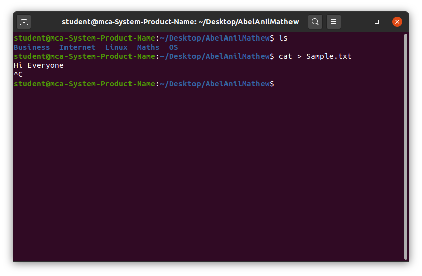

The cat command in Linux is more than just a simple tool; it’s a versatile companion for various file-related operations, allowing users to view, concatenate, create, copy, merge, and manipulate file contents.
- Displaying File Contents: Quickly view the contents of a file directly in the terminal.
- Combining Files: Merge multiple files into one by concatenating their contents.
- Creating New Files: Generate new files by redirecting output.
- Text Manipulation: Work with data streams or modify file content using redirection and piping.
cat [OPTION] [FILE]
Here,
[OPTION] : represents various command-line options.
[FILE] : the name of the file(s) to be processed. Let’s explore some of the common uses of ‘cat’ along with examples.
The most basic use of ‘cat’ is to display the contents of a file on the terminal. This can be achieved by simply providing the filename as an argument:
cat file_nameIf you want to create a new file or overwrite an existing file with new content, you can use ‘cat’ with the output redirection (`>`):
cat > newfile_nameThis will allow you to type text directly into the terminal, and when you press Ctrl + D, the entered text will be saved to Sample.txt.
If you want to add the content of one file to another, ‘cat’ can be used along with the append (>>) operator:
cat file_name1 >> file_name2The cat command is a simple yet powerful tool for managing text files in Linux. It enables users to efficiently view, combine, and create files, making it an essential command for daily tasks. Whether you're displaying file contents, merging multiple files, or redirecting data streams, cat simplifies text file operations. By mastering its functionality, users can enhance their efficiency and streamline file management processes in Linux.
"Success is not the key to happiness. Happiness is the key to success. If you love what you are doing, you will be successful."